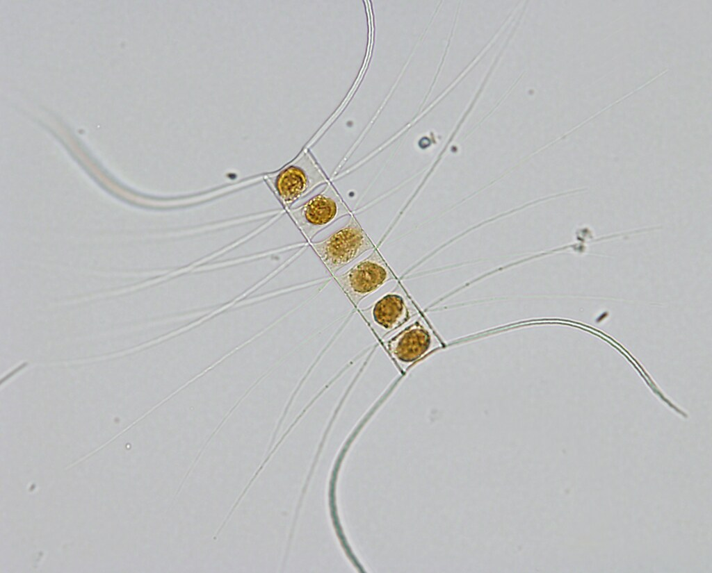
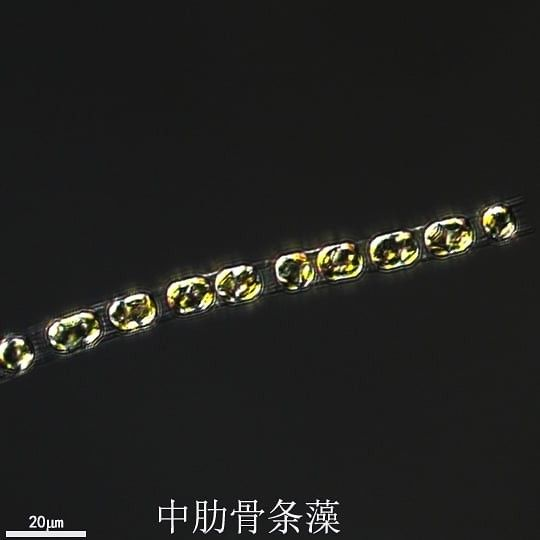
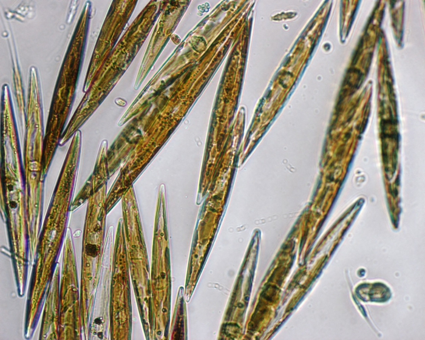
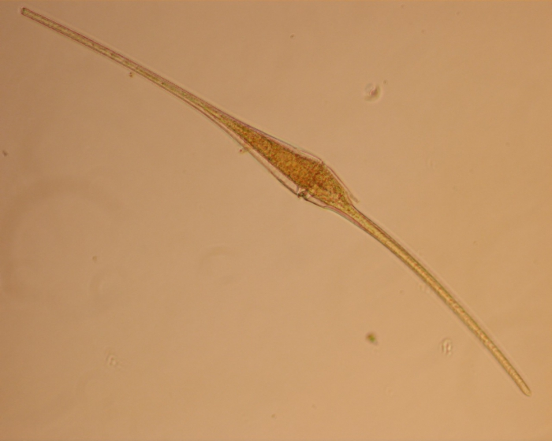
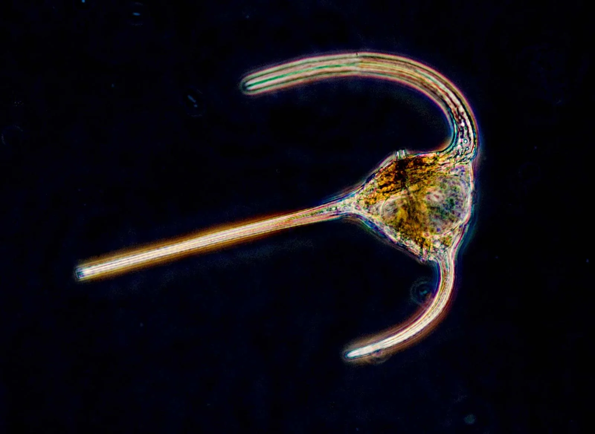
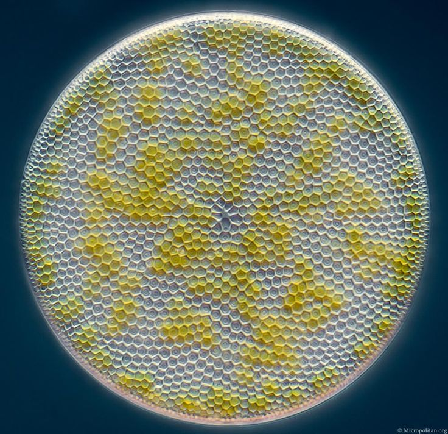
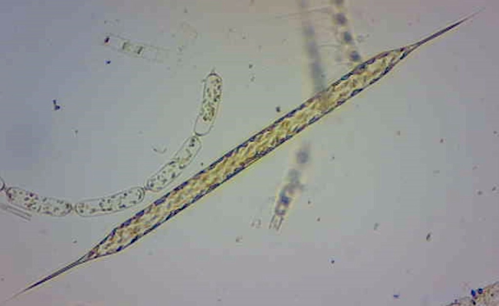
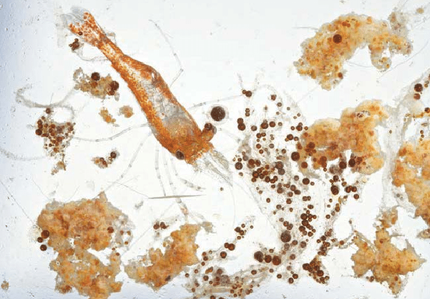

| Image | Species | Genus | Type |
|---|---|---|---|
|  | Chaetoceros | Chaetoceros | Phytoplankton |
|  | Skeletonema | Skeletonema | Phytoplankton |
|  | Pseudo-nitzschia | Pseudo-nitzschia | Phytoplankton |
|  | Ceratium fuses | Ceratium | Zooplankton |
|  | Dinoflagellate unspec | Dinoflagellate | Zooplankton |
|  | Coscinodiscus | Coscinodiscus | Phytoplankton |
|  | Rhizosolenia | Rhizosolenia | Phytoplankton |
|  | Detritus | - | Organic Matter |